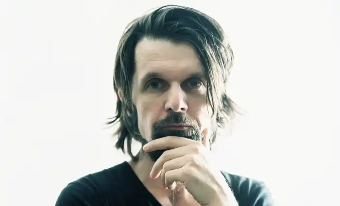
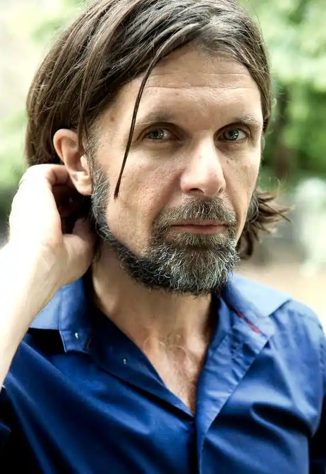

Кеннет Інгмар Клеметс, народився 7 листопада 1964 року в Готрорі, Уппланд, є шведським письменником (поезія) і перекладачем.
Клемец народився в Уппланді. Він навчався в Упсалі та Стокгольмі, де отримав ступінь бакалавра філософії з французької, шведської мов та літературознавства. У середині 1990-х років він переїхав до Гетеборга і пройшов курс письма в Північному народному коледжі в Кунгельві. Він працює, серед іншого, в Авторському центрі Väst.
Твори Клемета характеризуються зображенням темної сторони життя з депресією та самотністю як темами, часто з сильною інтенсивністю. Дебютував у 1997 році поетичною збіркою "Рік із тринадцятьма місяцями". За нею послідувала інтроспективна книга "Лихоманка суботнього вечора" 2002 року, яка стала незначним проривом. Третя поетична збірка Кеннета Клемета Accelerator виражає більш дикий, більш розчарований стан. За цю книгу він отримав культурну нагороду Sällskapet Gnistan у 2006 році з обґрунтуванням: "Поет із потужною лірикою, яка вигинається та розгойдується". Lux Interior з 2007 року — це довга збірка віршів, що складається з коротких фраз і речень. Наступна книга, Kling Kling 2009 року, має більш особистий відтінок. За Kling Kling Клемец був нагороджений Ліричною премією Жерара Боньє в 2010 році. Збірку віршів "Вся ця відритість, яка приходить" 2011 року, можна охарактеризувати як внутрішній монолог і за своєю структурою недалеко від драми. У збірці "Дотик" 2013 року натомість є короткі, зосереджені вірші, написані в Парижі, Гельсінкі та Гетеборзі. У 2015 році було випущено "Поки я пишу", збірку віршів, які раніше публікувалися лише в газетах і журналах. У своєму природному місці з 2018 року має певну схожість із "вся ця відкритість, що приходить" 2011 року і складається з монологів, що характеризуються побутовим абсурдизмом, соціальною критикою та чорним гумором. У 2017 році Джила Моссаед призначила Клеметса своїм наступником на Poetens plats у Нолгазі. 4-9 червня 2018 року Клемець був поетом місяця в P1(загальнонаціональний шведський радіоканал, створений Sveriges Radio.).